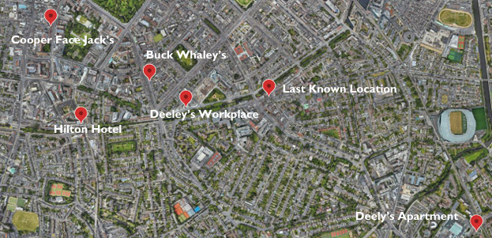
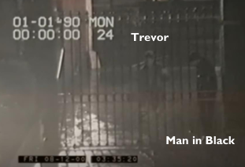
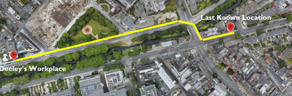
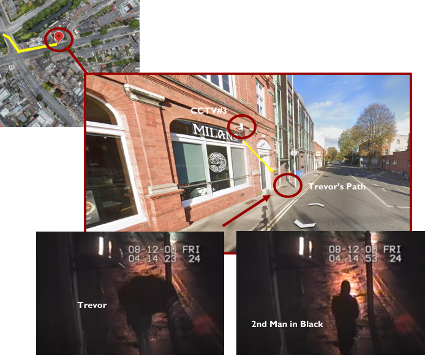
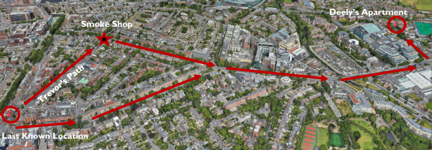

Reconstructing a Disappearance: An OSINT Missing Persons Case Analysis
OSINT Case Study | CCTV Analysis, Geolocation & Timeline Reconstruction
Case Overview
This project examined the disappearance of Trevor Deely, a 22-year-old man who went missing in Dublin, Ireland, on December 8, 2000.
Using publicly available information, I reconstructed his final known movements and examined the available CCTV footage, geographic locations, media reporting, and other open-source information related to the case.
The goal was not to claim a solution to the disappearance. Instead, the project focused on organizing the available information, identifying gaps in the known timeline, and demonstrating how OSINT methods can be applied to a real unresolved case.
Step 1: Mapping the Known Locations
I began by identifying the major locations connected to Trevor's final known movements. These included his workplace, the venues he visited during the evening, his apartment, and the location of his final confirmed CCTV sighting.
Mapping these locations helped establish the geographic context of the case and made it easier to compare the known timeline against the route he appeared to be taking through Dublin.

Step 2: Reconstructing the Timeline
Using public reporting and available CCTV footage, I created a structured timeline of Trevor's final known movements.
After leaving a nightclub at approximately 3:25 a.m., Trevor returned to his workplace on Wilton Terrace. CCTV footage shows him arriving at the gate shortly after 3:35 a.m. and entering the building. He left approximately 27 minutes later and continued walking through the area.
Shortly after leaving work, Trevor placed a call to a childhood friend. He was later captured by another CCTV camera at approximately 4:14 a.m. walking in the direction of his apartment. This became his last confirmed sighting.
Step 3: Analyzing the Workplace CCTV
One of the most significant portions of the available footage shows an unidentified man near the entrance to Trevor's workplace.
I reviewed the timing and movement of both individuals across the available camera angles. The footage shows Trevor passing the individual, later arriving at the gate, and briefly occupying the same area before Trevor entered the building.
The available footage does not establish the unidentified man's involvement in Trevor's disappearance. For this analysis, the footage was treated as an unresolved point of interest rather than evidence of responsibility.

Step 4: Mapping Trevor's Final Known Route
I then mapped the route between Trevor's workplace and his final confirmed CCTV location.
This helped visualize the portion of his journey that can be supported by publicly available evidence and highlighted the point at which the confirmed timeline ends.

Step 5: Reviewing the Final CCTV Sighting
The final confirmed CCTV footage shows Trevor walking past the former AIB bank near Baggot Street Bridge and Haddington Road at approximately 4:14 a.m.
Approximately thirty seconds later, another individual dressed in dark clothing was recorded walking in the same direction. Public reporting later indicated that this second individual was identified and investigators were satisfied that he was not connected to Trevor's disappearance.

Step 6: Examining Alternative Routes
One question raised during the analysis was whether Trevor intended to travel directly home after his final CCTV sighting.
A publicly discussed possibility was that he may have continued toward a nearby 24-hour shop before returning to his apartment. Mapping this potential route showed that his last confirmed direction of travel was compatible with more than one possible destination.
This did not establish where Trevor went after the final CCTV footage. Instead, it demonstrated why the available geographic information alone cannot determine his destination.

Investigative Questions
The reconstruction raised several questions that could not be resolved using publicly available information.
- What happened after Trevor left the area covered by the final publicly available CCTV camera?
- Did additional CCTV systems exist along his possible routes?
- What destination was Trevor actually traveling toward after his final confirmed sighting?
- Could environmental conditions, traffic, or the nearby canal have played a role in his disappearance?
- Could additional historical imagery or newly recovered records provide information that was unavailable at the time?
Investigation Limits
This case demonstrated an important limitation of open-source intelligence: publicly available information can help organize and verify known evidence, but it cannot always fill gaps where evidence does not exist.
Much of the CCTV footage from the area was no longer available, and the publicly accessible material does not establish what happened after Trevor's final confirmed sighting.
As a result, this project should be viewed as an OSINT-based reconstruction of the known timeline rather than an attempt to identify a definitive explanation for the disappearance.
Key Takeaway
This project demonstrated how OSINT techniques can be applied to an unresolved real-world case without overstating what the available evidence can support.
By combining CCTV analysis, geolocation, route mapping, public records, and media reporting, I was able to create a structured reconstruction of Trevor Deely's final known movements and identify areas where the public timeline remains incomplete.
Most importantly, the investigation reinforced the importance of separating verified information from speculation and being willing to conclude that the available evidence is insufficient to answer a question.